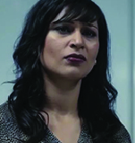
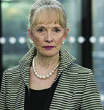

Los personajes principales en este capitulo son:


Michael Callow (Rory Kinnear) es el primer ministro británico, protagonista de este capítulo. Es quien se ve forzado a practicar cierto acto para liberar a la princesa secuestrada.
Malaika (Chetna Pandya) es una periodista que trabaja para . Sabe que se estan ocultando detalles del secuestro y ella intenta averiguarlo.
Alex Cairns (Lindsay Duncan) trabaja para el Michael y tiene un fuerte peso dentro de su gabinete. Lo ayuda en la toma de decisiones dando su opinión sobre el tema.